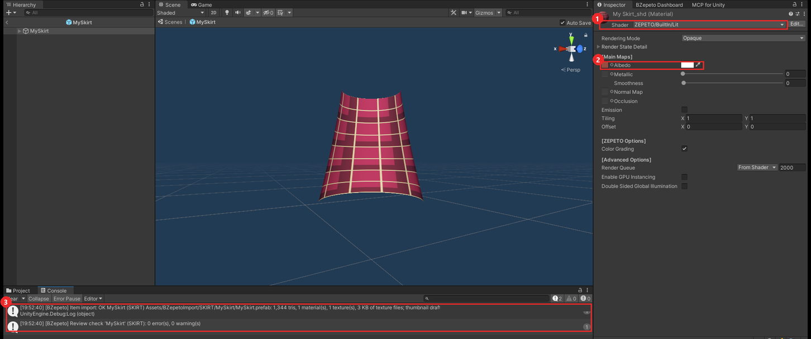
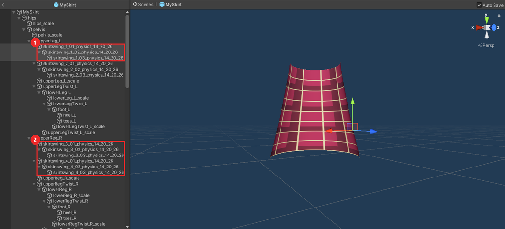
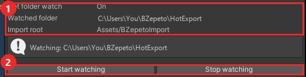

Unity Package (ZEPETO Studio)
🇺🇸 English | 🇰🇷 한국어
1. Install
- Open your ZEPETO Studio project (Unity 2020.3.9f1)
- Window > Package Manager, click + at the top left, Add package from tarball...
- Pick
com.bzepeto.unity2020-<version>.tgz - A BZepeto menu appears in the menu bar, and the Console shows
[BZepeto] Hot folder watch started
To update, do the same with the new file — the old version is replaced.
2. What happens by itself
- Items from Blender (Send to Unity) land in
Assets/BZepetoImport/<CATEGORY>/<item>/as FBX, prefab and textures - ZEPETO shaders are applied — the shader chosen in Blender, or a guess from the names — and every map goes into its slot with the right colour space, keywords and factors (normal map, metallic/smoothness, emission, sheen, fur, hair, iridescence, clear coat, toon maps, the CustomEnv cubemap). Textures with alpha get Cutout mode (lace)
- Headwear and mask materials get (NoColor) in their name, so the hair colour does not tint them
- Import BlendShapes is switched on, so face expressions survive the import
- The 1 MB texture total is checked again, and a thumbnail draft (300×300 transparent PNG) is
saved to
<project>/BZepetoThumbnails - Textures from ArmorPaint are copied next to the item and hooked up the same way
- Set outfits (a top and a bottom material, UDIM tiles):
<item>.udim.jsonsays which textures belong to which material, and every material gets its own maps
Unity does not need to be the active window — it keeps importing in the background.

A skirt sent from Blender: ① the ZEPETO shader (ZEPETO/BuiltIn/Lit) is set and ② its texture sits in
the Albedo slot. ③ The Console shows the import result and the review check (0 error(s), 0 warning(s)).
Swing bones — chains made with Blender's Auto Skirt Swing arrive under the thigh bones with their names
intact (skirtswing_1_01_physics_14_20_26) ①②. ZEPETO swings every bone whose name contains _physics.

3. The BZepeto menu
| Menu | What it does |
|---|---|
| BZepeto > Open Dashboard | status of the bridge and the hot folder |
| BZepeto > Bridge Connection | connect to Blender by hand |
| BZepeto > Review > Check Selected Prefab | review rules on the selected prefab: Light components, particle limits, particles without material or texture (white squares after upload), non-ZEPETO shaders, Color Grading, fur length, "(NoColor)", Import BlendShapes. Results in the Console |
| BZepeto > Review > Make Thumbnail (Selected Prefab) | thumbnail draft; particles run for a second so they show |
| BZepeto > Review > URP Readiness (Selected) | whether every material is a ZEPETO BuiltIn shader (converted automatically when ZEPETO switches to URP) |
| BZepeto > Effects > Add Safe Particle System | a particle system with every option inside the Effect guide's limits, on the selected fx joint |
| BZepeto > Effects > Set Selected Textures as Particle Sprites | Sprite (2D and UI) + Full Rect, as the Effect guide asks |
| BZepeto > Capture Playground For Blender | in Play mode of the playground scene: records ZEPETO's preview menu for Blender's Playground and clip tests |
| BZepeto > Convert Diagnostics | why a "Convert to ZEPETO style" failed |

The Import tab of BZepeto > Open Dashboard: the hot folder watch and its folder ①, and the buttons to start or stop it ②.